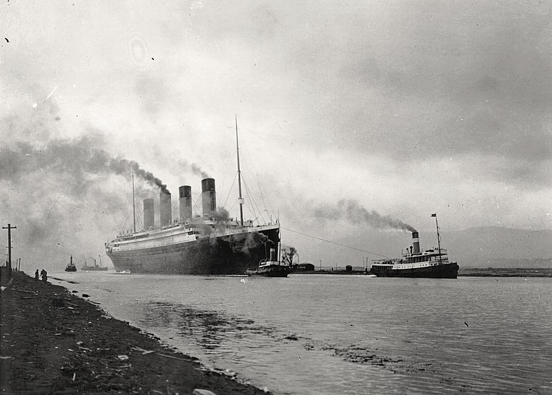

ترقب العالم بلهفة ذلك الحدث التاريخي، وهو
قيام السفينة تيتانيك بأولى
رحلاتها عبر المحيط الأطلنطي (الأطلسي)
من إنجلترا إلى الولايات المتحدة الأمريكية في 10 إبريل 1912.
فعلى رصيف ميناء كوينز تاون بإنجلترا كان الاحتفال بالغًا بهذا
الحدث الكبير، اصطف آلاف الناس من المودعين وغير المودعين يتأملون،
بإعجاب السفينة العملاقة وهي راسية في الميناء
في قوة وشموخ، والمسافرون وهم يتجهون إليها في سعادة وكبرياء. ولا شك أن الكثيرين منهم كان
يتمنى في قرارة نفسه، لو يكون له مكان على ظهر السفينة.
وجاء الموعد المحدد لبدء الرحلة، فارتفعت الأعلام،
وبدأت فرق الموسيقى المحتشدة على رصيف الميناء
تعزف موسيقاها الجميلة المرحة
وسط هتاف المودعين والمسافرين، وبدأ صوت المحرك يعلو حتى أخذت السفينة
تيتانك تتحرك لتبدأ أول وآخر رحلاتها وسط هذا الاحتفال البهيج
المارد
لم يكن اسم التيتانيك والذي يعني المارد، اسما مبالغًا
فيه في تسمية تلك السفينة فقد اتصفت بثلاث صفات لم
تتوفر بغيرها من السفن وهي: الضخامة،
عدم القابلية للغرق والفخامة.

الضخامة
كانت السفينة تيتانيك أضخم سفينة ركاب شهدها العالم في
ذلك الوقت حيث بلغ وزنها 52310 طنا وبلغ طولها 882 قدما،
وبلغ عرضها 92 قدما، ويمكنك تصور هذه الضخامة بشكل آخر فالسفينة تيتانك يمكن
أن تعادل في ارتفاعها ارتفاع مبنى مكون من أحد عشر طابقا علاوة
على طولها الكبير الذي قد يعادل أربع مجموعات من الأبنية المتجاورة.
عدم القابلية للغرق
كذلك لم يكن هذا المارد قابلا للغرق
في نظر من صمموه فالسفينة ليست كغيرها من السفن حيث تنفرد باحتوائها على قاعين يمتد
أحدهما عبر الآخر كما يتكون الجزء السفلي من السفينة من 16 قسما (مقصورة)
لا يمكن أن ينفذ منها الماء وحتى لو غمرت المياه على سبيل الافتراض
أحد هذه الأقسام فإنه يمكن لقائد السفينة وبمنتهى السهولة
أن يحجز المياه داخل هذا الجزء بمفرده ويمنعها من غمر باقي الأجزاء.
الفخامة
تمتعت السفينة تيتانيك بدرجة عالية من الفخامة لم تتوفر من قبل
لأي سفينة ركاب. ويمكنك تصور مدى هذه الفخامة
والروعة إذا عرفت أن ثمن تذكرة الدرجة الأولى لهذه السفينة قد يزيد
عن دخل أي فرد من طاقمها طوال فترة حياته، وأن كانت الدرجتان الثانية
والثالثة على وضع أقل من الفخامة إلا أنهما تعدان من
أفضل وأرقى قاعات السفر عن مثيلتهما في السفن الأخرى